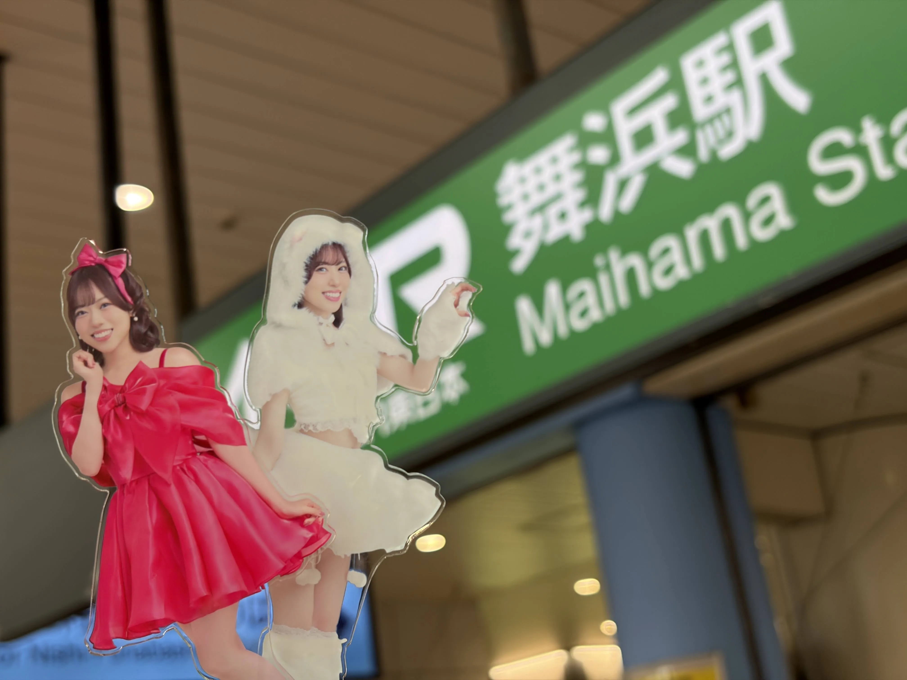
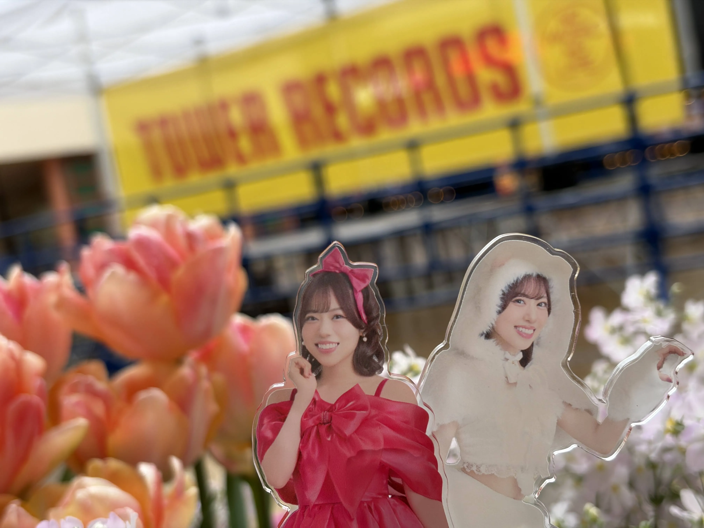

伊達さゆりさんのリリースイベント千葉公演に参加しました。
舞浜駅周辺が会場。あいにくの雨でした。

前日同様、私用でCD販売時間に間に合わなかったため、知人に代行をお願いして整理券を確保してもらいました。
前日ほどではありませんでしたが、60番台の整理番号を確保できました。ありがたい限りです。
開場まで少し時間があったので、近隣のショップを見て回るなどして過ごしました。
そして開場直前、雨脚が一気に強まりました。さらに、入場にはレインコートが必須とのアナウンス。（もっと早く言ってほしかったですね…。）
整理番号が遅い知人に急いでレインコートを購入してもらい、別の知人が入場時に手渡してくれるという見事な連携で事なきを得ました。本当に助かりました。
開演後が一番雨が強かったように思います。ある意味で印象に残る公演でした。
初披露の「Wonder Wonder Style」も聴くことができ、大満足です。

ということで、発売日までのリリースイベント全7公演を無事に走り切りました。充実した期間でした。